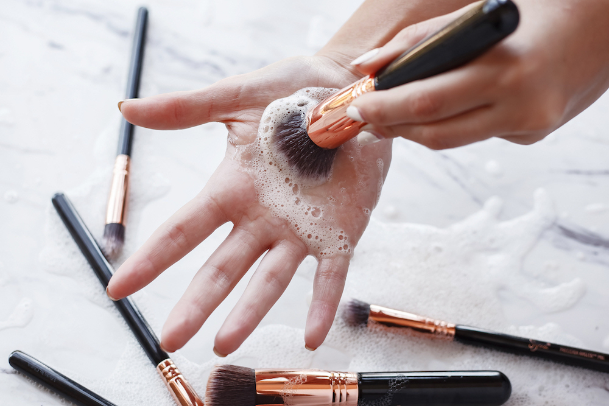

| |
Segun lor dermatologos y cosmetologos, deveriamos
lavar las brochas con mucha frecuencia para evitar
acumulación de bacterias
Según los expertos, las brochas de base y corrector
se deben lavar al menos una vez a la semana para evitar
la acumulación de productos. Debido a que estos pinceles
se usan en la cara, cuanto más limpios estén, mejor.
Esto ayudará a mantener limpia tu cara, piel y bueno, herramientas de maquillaje.
Además, hay que entender que los pelos y las esponjas del cepillo
suelen ser porosos, por lo que retienen aceites y bacterias.
Para hacer esta limpieza no necesitas ningún tipo de producto en
especifico más que agua tibia y jabón.
¿Cuál es la mejor manera para lograrlo?
haz clic en el enlace para ver el video
